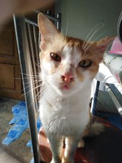
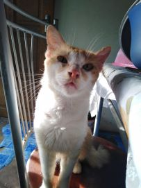
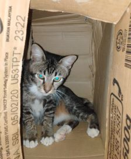
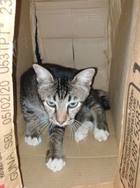

Cat Lover.
|  |  |
| The first cat I had. | |
I love him. He still here with us. The most loyal cat. He is just a stray cat with his mom. Sadly, his mom went missing. He is too small to live alone. My family and I decide to take care of him until now.
|  |  |
| The second cat I had. | |
I love him too.Same like Ciki, he is just a stray cat. Sadly, it is only for fews weeks we stay together. He died because he ate poisonous food. I assume that he ate that food because he came home weak and there's foam cam outside of his mouth. I cried so hard at that night. Writing this also make me tear up. He is the cat that i cannot forgot. How can people put poison in the food and give it to innocent cat like him.